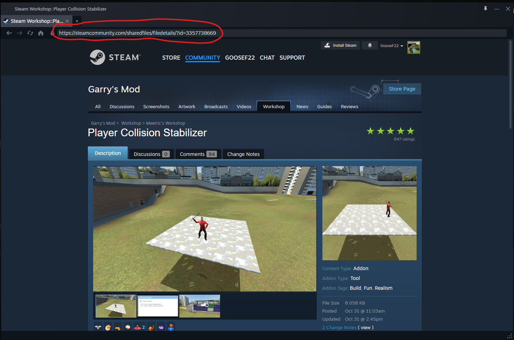
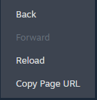
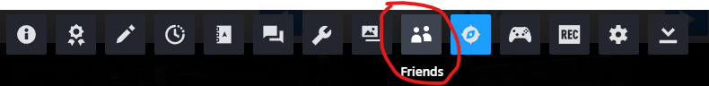
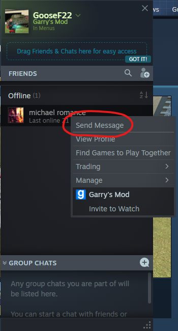
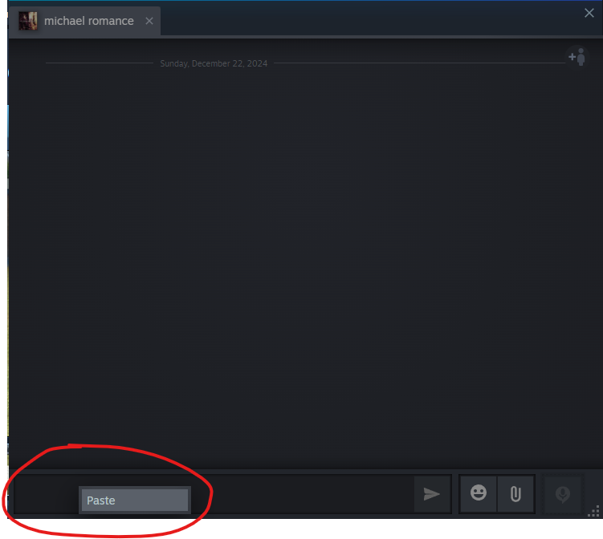
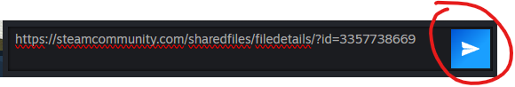

HOW TO SEND MODS ON GARRY'S MOD
Step 1. Go to the Addons Page

Step 2. Open the Workshop, and find a mod you like!

Step 3. Once you find a mod you like, copy the link.
The easiest way to copy the link is to right click on the big picture, and click "COPY PAGE URL".
Step 4. Click on the Friends Button at the Bottom.
Step 5. Right Click on the Person You Want to Send the Mod to.
Step 6. Right Click on the Part Circled in Red (where you normally type) and Click "PASTE"
Step 7. And Finally, Click SEND!
